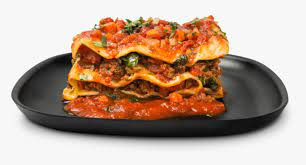

Lasagna

Ingredients:
- Onion
- Garlic
- Carrots
- Ground beef
- Lasagna sheets
- Mozzarella
- Canned tomatoes
- Oregano
- Basil
Instructions:
- Dice the onion and crush the garlic finely. In a large frying pan, sautee the onions and garlic, add the ground beef and oregano, cook until brown.
- Dice the carrots. Add the carrots and tomatoes to the pan, and simmer for at least 45 minutes. Season to taste. Add water if the sauce looks too dry.
- In a oven dish, layer the sauce and lasagna sheets. Finish the top with mozzarella and garnish with basil.
- Bake at 200 degrees celcius or until the cheese is golden brown.
All recipes